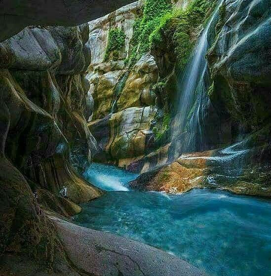

<div class="portfolio-single-load clearfix">
    <div class="custom-full-width-box">
        <div class="custom-container">
            <div class="custom-row align-items-center">
                <div class="custom-image-column">
                    
                </div>
                <div class="custom-text-column">
                    <h2 class="custom-heading">Moola Chotok</h2>
                    <p class="custom-paragraph">
                        
                        Nestled amidst the rugged terrain of Khuzdar District, Moola Chotok is a hidden gem in Balochistan, offering a sanctuary of natural beauty and tranquility. Visitors are captivated by the picturesque waterfalls, crystal-clear pools, and lush greenery that adorn this enchanting valley. Venture on exhilarating treks through the surrounding hills, marvel at the breathtaking vistas, and immerse yourself in the serene ambiance of this pristine paradise.


                    </p>
                </div>
            </div>
        </div>
    </div><!-- .custom-full-width-box end -->

</div><!-- end single-project -->
